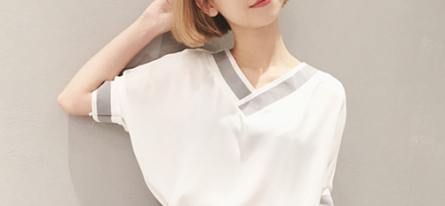

首页: 产品展示> 发展历程
发展历程 >
关于我们 >
韩璐璐曾游服巨擘桂由美YU。同时,以时尚博主冠军身份受邀任悦己专栏撰稿人及多家电视媒体造型师。 作为“新式轻礼服”创导者,从2008年HLL设计工作室成立之初,便受到都会精英女性的热捧和时尚媒体的广泛关注。
设计风格优雅而前代简约设计巧妙的结合在一起,创造出种精致并且经典的设计风格。设计师认为面料是影响服装设计的关键所在,因此对面料的运用有着独特的见解而每一季由设计师亲自操刀设计的另类印花面料
设计风格优雅而前卫,注重服装设计的结合在一起,创造出种精致并且经典的设计风格。设计师认为面料是影响服装设计的关键所在,因此对面料的运用有着独特的见解而每一季由设计师亲自操刀设计的另类印花面料
设计风格优雅而前卫,注重服装设计的原创精神。设计师将复古元素和现代简约设计巧妙的结合在一起,创造出种精致并且经典的设计风格。设计师认为面料是影响服装设计的关键所在,因此对面料的运用有着独特的见解而每一季由设计师亲自操刀设计的另类印花面料
韩璐璐曾游服巨擘桂由美YU。同时,以时尚博主08年HLL设计工作室成立之初,便受到都会精英女性的热捧和时尚媒体的广泛关注。
韩璐璐曾游服巨擘桂由美YU。同时,以时尚博主08年HLL设计工作室成立之初,便受到都会精英女性的热捧和时尚媒体的广泛关注。
韩璐璐曾游服巨擘桂由美YU。同时,以时尚博主08年HLL设计工作室成立之初,便受到都会精英女性的热捧和时尚媒体的广泛关注。